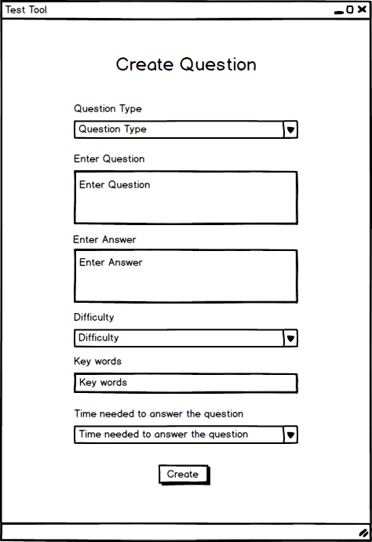
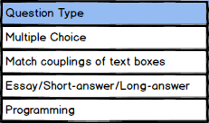
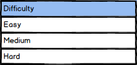
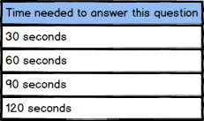

To add questions, the user chooses the Add Questions
option from the menu page under the Question Manager
popup menu. The testing tool redirect the used to the add/create question form show on Figure 1.

Figure 1: Default view of the Create Question Form.
Each question is described by the following attributes:

Figure 2: Question Type Dropdown.

Figure 3: Difficulty Dropdown.

Figure 4: Time Needed To Answer The Question Dropdown.
The user can select the correct question type by clicking on the "Question Type" drop down menu. After the type has been selected by clicking on it, the necessary fields for entering the question parameters appears. Forms for different question types: